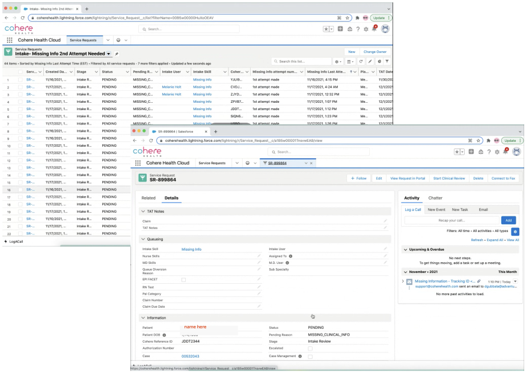
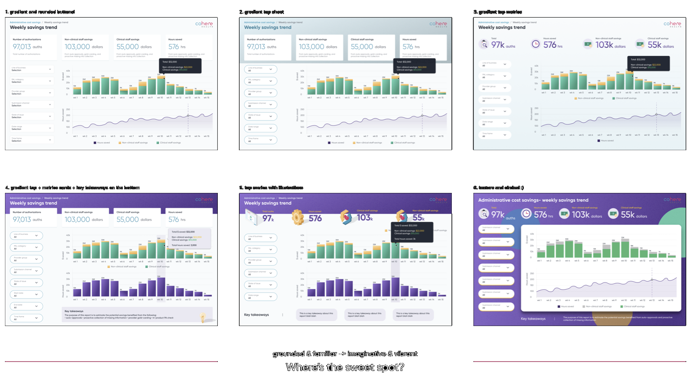
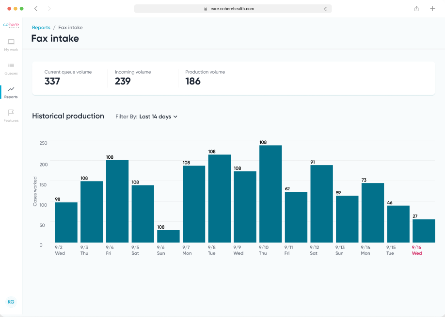

Designing a workforce management tool that empowered ops teams with automation, visibility, and control—while saving $320k annually
Context
Prior authorization is the process where physicians request approval from health insurance companies before treating a patient. Insurers use it to control costs and make sure treatments are medically necessary. In theory, that’s good for everyone. In practice, 93% of physicians report that it delays care, and 94% say it negatively affects patient outcomes.¹
At Cohere Health, 6,000+ of these submissions land on the ops team every day, and each one has to be processed manually across fax intake, clinical review, and denial letter writing.
¹ American Medical Association, 2024 Prior Authorization Physician Survey.
Project Intro
Project / Team / Role
Queue Management / Cohere Health ops tools / Sole product designer, working with 1 PM and 6 engineers
What I built
A native workforce management tool that replaced Cohere’s Salesforce setup for case queues. I started with a single queue (fax intake) as a proof of concept, then scaled the product to 15+ queues across the company.
Timeline
Feb 2022 – Apr 2023.
The Problem
The ops team used Salesforce to queue up cases every day. That meant:
- Lots of customization for each queue
- Constantly switching between apps, since Salesforce isn’t native to Cohere
- No real-time reporting
- Expensive: $1,600 per license for 250+ users
So… how might we create a native, less manual queue management experience for intake specialists so that they can process faxes more efficiently?

Research & Goals
I combined desk research (product and competitive analysis) with interviews of intake specialists, starting with the fax intake workflow. That shaped three design goals, each with a success metric:
1. Everything Salesforce does, but better
Intake specialists can quickly find the highest-priority case, and supervisors spend under 20% of their time on case assignment.
2. Agents feel accomplished when they finish a fax
Over 80% user satisfaction, compared to Salesforce’s baseline of 47%.
3. Scale from 1 to 2, then to many
Start with fax intake as a proof of concept, then extend to higher-complexity workflows (like nurse review) within three months.
Everything Salesforce does, but better
Challenge
Intake specialists didn’t always know which cases to prioritize, which led to missed turnaround times (TAT). TAT is essential for compliance, and missing it can mean significant revenue loss.
Meanwhile, supervisors spent nearly 75% of their time manually assigning cases, pulling them away from higher-value work like coaching and team development.
Exploration
Starting broad: how should a fax get assigned and worked on? I explored five directions, including “case galaxy,” a deliberate push-the-limit idea that surprisingly ended up informing the final solution.

Final designs
Intake specialists get one unmissable action: start the next case, and the system finds the highest-priority one for them. Queue and personal metrics sit above their case history.


Supervisors get real-time queue and team metrics, red “Unassigned” chips that flag cases needing attention, search across unworked, in-progress, and completed cases, and extra tabs for greater autonomy: Queues, Reports, and Feature Flags.

Agents feel accomplished when they finish a fax
Pushing back and reframing
In talking to users, I found that a sense of accomplishment is what motivates intake specialists to stay engaged and do their best work. My PM called it a “nice-to-have” compared to functional needs and asked me not to spend time on it.
I pushed back with two points. Our baseline survey showed only 47% of intake staff rated Salesforce a 4–5 out of 5, and we had set a goal of 80% for Queue Management. And one of Cohere’s design principles is to “inject joy into healthcare,” which made this a great chance to do exactly that.
Exploration
I explored several “work complete” screens, from team impact totals to case completion time to randomly generated GIFs.

Final design
After each case, intake specialists see the outcome and tracking details for a sense of completion, queue and team metrics for real-time feedback, a randomly generated GIF to celebrate (we hand-selected 500+ cheerful, product-appropriate ones), and a button to start the next highest-priority case right away.

“The work complete screen makes me feel good. I like the affirmation.”Amana, intake specialist
“it’s like flowing, I’m just in the flow. I’ve never worked so fast.”Cristina, intake specialist
Scale from 1 to 2, then to many
Fax intake alone drove a 45% increase in cases worked per hour within four months of researching, designing, and building it. The next step was expanding to clinical review.
One product, two definitions of “good work”
Intake specialists and clinical reviewers do very different work, so the same product had to serve two sets of needs.
Intake specialists
- Optimize for speed and volume
- Follow strict rules
- Motivated by efficiency metrics
- Non-clinical: treat all faxes equally
Clinical reviewers
- Optimize for clinical accuracy
- Define their own workflows
- Guided by judgment, not metrics
- Clinically trained: context matters
That shaped how each queue felt. For fax intake, joy is momentum plus light delight; for clinical review, joy is confidence plus clarity.

Beyond two personas
To scale beyond fax intake and clinical review, I also designed a configuration tool that let the team stand up new queues without custom engineering. That’s what took Queue Management to 15+ queues in the product.
Cohere’s first data visualization product
Because Salesforce lived outside the Cohere portal, ops leaders lacked real-time reporting, which limited visibility and slowed decision-making.
To make a first-ever data visualization product tractable, I broke the work down by user story, then explored six visual directions for the data, from grounded and familiar to imaginative and vibrant, before landing on the sweet spot.


Outcomes and Learnings
In the first six months after launch, the team missed zero turnaround deadlines. Case assignment time dropped by 86%, new queues scaled in under three months, and replacing Salesforce saved $320k a year in licensing.
What I learned
Scale through configuration, not customization. Building the configuration tool early meant the system could grow to 15+ queues without engineering rebuilding it each time.
Back a “nice-to-have” with data. Tying the joy work to the 47% satisfaction baseline and an existing design principle turned a pushback into a shipped feature that users loved.
Break ambiguous 0 → 1 work into user stories. It made a first-ever data viz product tractable and gave stakeholders something real to react to early.